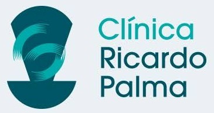
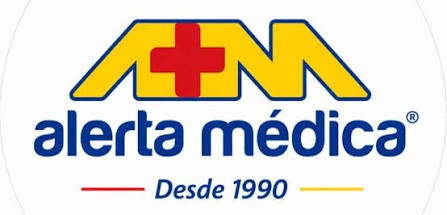
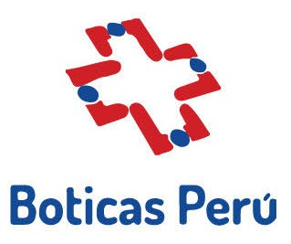
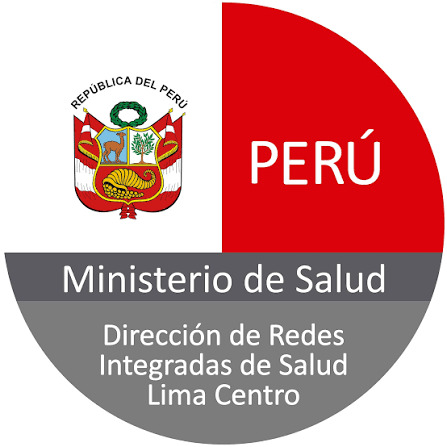

01
Campo laboral
Proyéctate en la industria farmacéutica, representando marcas de laboratorios o farmacias, visitando consultorios médicos de distintas especialidades y en compañías farmacéuticas.
Programa técnico
Especialízate en promoción farmacéutica y atención profesional.
Más conocimiento,
más oportunidades
PERFIL PROFESIONAL
Al finalizar el programa de Visitador Médico y Ejecutivo Farmacéutico, podrás desenvolverte en la industria farmacéutica realizando visitas profesionales, identificando y gestionando clientes potenciales.
Desarrollarás la seguridad para resolver dudas, cerrar ventas y fidelizar clientes con ética, profesionalismo y una actitud positiva.
INFORMACIÓN DEL PROGRAMA
Formación hoy,
más oportunidades mañana
Proyéctate en la industria farmacéutica, representando marcas de laboratorios o farmacias, visitando consultorios médicos de distintas especialidades y en compañías farmacéuticas.
Copia de DNI o carné de extranjería y copia de recibo de agua, luz o teléfono. Con estos requisitos puedes realizar tu preinscripción.
Instituto licenciado por el Ministerio de Educación, docentes calificados, laboratorios modernos, convenios con clínicas y hospitales, bolsa de trabajo, conferencias magistrales y formación para empleabilidad y emprendimiento.
Conocimiento
que genera bienestar
FORMACIÓN PARA LA EMPLEABILIDAD
 FORMACIÓN APLICADA
FORMACIÓN APLICADA
Desarrolla habilidades para comprender el mercado, identificar oportunidades y comunicar valor con seguridad.

Prepárate para asesorar, fidelizar clientes y desenvolverte con ética en el sector salud.
Una formación diseñada para impulsar tu empleabilidad.
MALLA CURRICULAR OFICIAL
Contenido publicado para el programa de Visitador Médico y Ejecutivo Farmacéutico.
Construye una mirada estratégica sobre mercado, productos, clientes y ventas.
Conoce las bases científicas que respaldan una visita médica responsable.
Transforma conocimiento de producto en una visita útil y profesional.
Fortalece tu presencia, negociación y capacidad de relacionamiento.
GALERÍA DE VIDA ESTUDIANTIL
← Desliza para ver más fotos →
CONVENIOS
El programa publica convenios con clínicas, hospitales, farmacias e instituciones de salud.




HISTORIAS EN VIDEO
Formato vertical tipo Reel para mostrar testimonios reales, prácticas y experiencias de empleabilidad.
← Desliza para ver más reels →
Todo lo que necesitas saber antes de inscribirte.
La página oficial indica inicio el 20 de agosto y una duración de 6 meses. Para confirmar la próxima fecha de inicio, comunícate con admisión.
El campo laboral publicado considera industria farmacéutica, representación de marcas de laboratorios o farmacias, consultorios médicos de diversas especialidades y compañías farmacéuticas.
Necesitas una copia de DNI o carné de extranjería y una copia de recibo de agua, luz o teléfono.
Solicita detalles sobre inicio, horarios, requisitos y proceso de preinscripción.